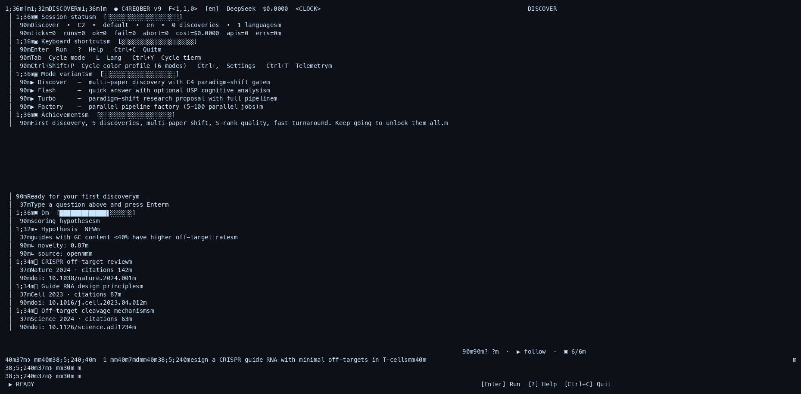
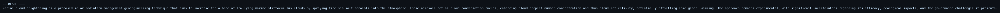

Marine cloud brightening
Geoengineering research proposal: MCB parameter space, field experiments, polar efficacy hypotheses.
Read proposal →Six full blast turbo runs — literature search, gap mining, simulation, and gated dissertation prose. Real pipeline artifacts, not marketing copy.
Geoengineering research proposal: MCB parameter space, field experiments, polar efficacy hypotheses.
Read proposal →Distributed clean energy pathway: breakthrough physics hypotheses for grid decarbonization by 2040.
Read proposal →Metabolic reprogramming hypotheses for cellular aging — gaps, falsifiers, simulation-backed framing.
Read proposal →Antimicrobial resistance: engineered phage + CRISPR hypotheses to restore antibiotic efficacy.
Read proposal →Regenerative agriculture hypotheses for desertification reversal and durable soil carbon.
Read proposal →Microbial/enzyme remediation v2 — topic-routed biogeochemistry sim (9s, not 38min GCM timeout).
Read proposal →




Repo index: discoveries/humanity_mission_2026-07-09 · Reproduce: ./scripts/run_humanity_mission.sh turbo "topic" --output out.md